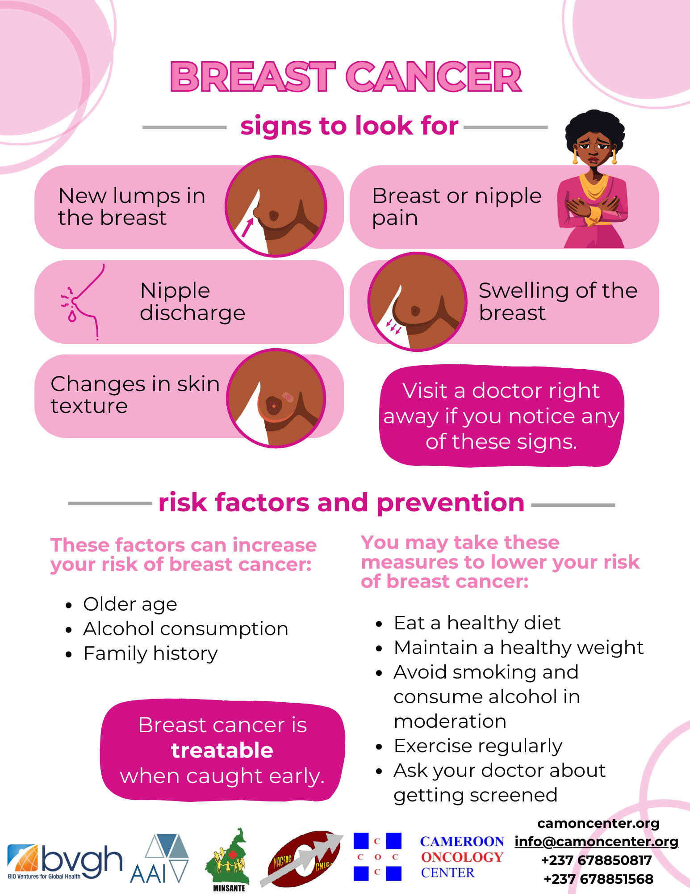
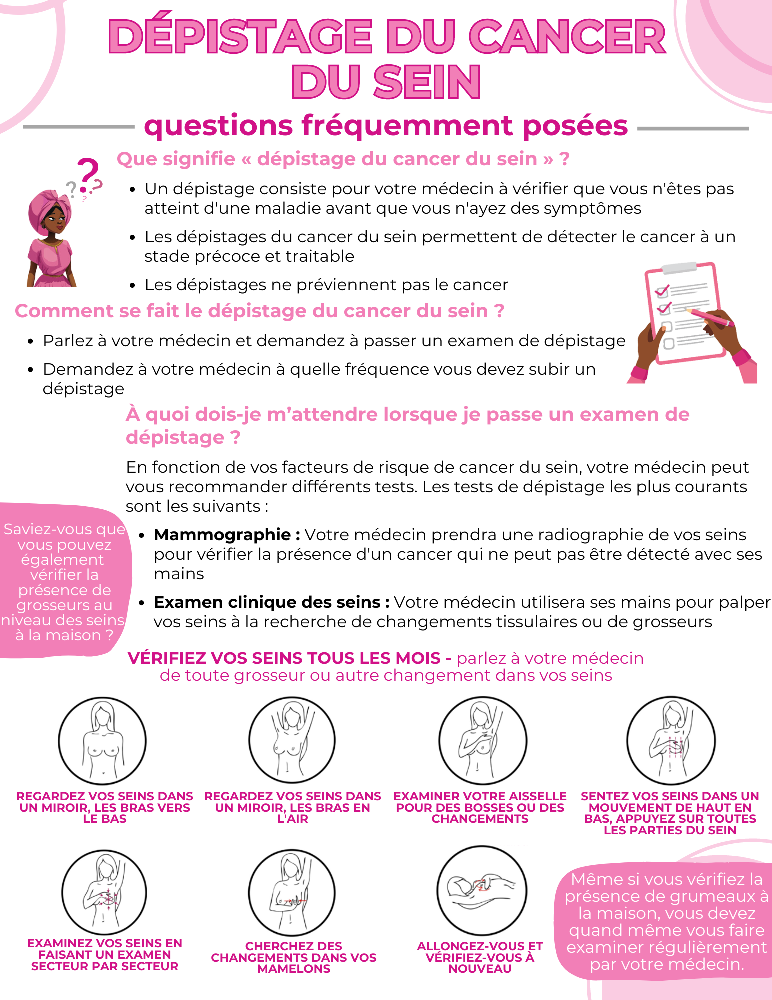
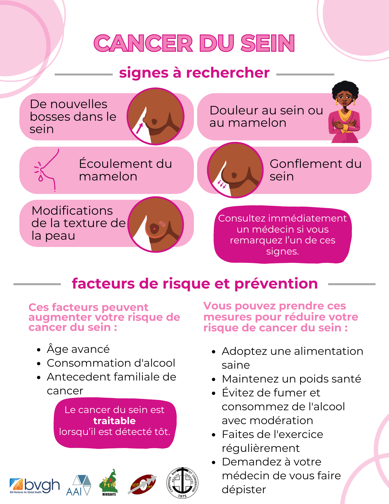
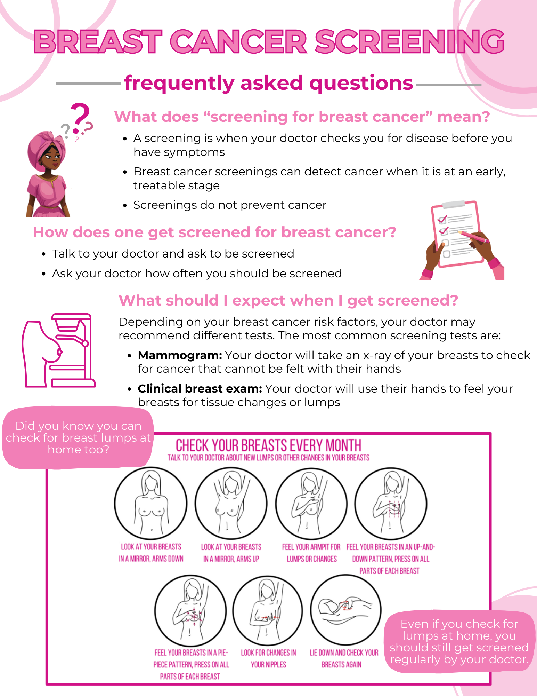

Knowledge can save lives. Download, print and share CCF educational materials in English and French.
These resources explain breast-cancer warning signs, risk factors, prevention and screening. They are designed for community education and can be shared online or printed for outreach.




Download the IARC Global Cancer Observatory GLOBOCAN 2024 Cameroon fact sheet used for the cancer-burden statistics on this website.
View GLOBOCAN 2024 Fact SheetFuture categories: Cervical Cancer & HPV · Prostate Cancer · Childhood Cancer · Cancer Prevention · Screening · Healthy Lifestyle · School Education.
Publication note: Before final public launch, CCF should update legacy flyer contact details and proofread the French originals while preserving the educational content.